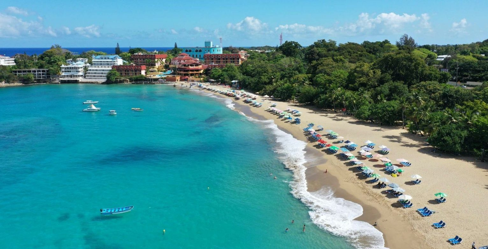

Taino Bay → Sosúa
Taino Bay está dentro de la ciudad de Puerto Plata, así que estarás en la carretera costera pocos minutos después de bajar del barco. Te esperamos a la salida de la terminal.

Sosúa · Puerto Plata · República Dominicana
El aeropuerto de Puerto Plata está a 15 minutos. Los muelles de cruceros, a 50. Llegues como llegues, un chofer local ya te espera — con el precio acordado antes de salir de casa.
La versión corta
Sosúa es un pueblo de playa en la costa norte de la República Dominicana, en la provincia de Puerto Plata. El aeropuerto más cercano es el Gregorio Luperón (POP), a unos 9 km — cerca de 15 minutos en carro. SG Caribbean Transfers & Tours hace transfers privados puerta a puerta desde POP hasta Sosúa por un precio fijo de US$23.95 para 1 a 6 pasajeros, sin pago por adelantado: le pagas a tu chofer en efectivo al llegar.
Si llegas en avión
Estas son las tarifas que cobramos de verdad, no estimaciones. Cada una cubre un vehículo privado para hasta 6 pasajeros, un solo trayecto, puerta a puerta.
| Aeropuerto | Código | Distancia | Duración típica | Precio fijo |
|---|---|---|---|---|
| Puerto Plata — Gregorio Luperón Intl. | POP | ~9 km | ~10–15 min | US$23.95 |
| Santiago — Cibao Intl. | STI | ~85 km | ~1 h 30 | US$98.50 |
| Samaná — El Catey Intl. | AZS | ~155 km | ~2 h 30 | US$148.50 |
| Santo Domingo — Las Américas Intl. | SDQ | ~245 km | ~4 h | US$219 |
| Punta Cana Intl. | PUJ | ~300 km | ~4 h 45 | US$425 |
Suma US$5 por cada pasajero por encima de seis. Las distancias y los tiempos son aproximados y dependen del tráfico y de tu dirección exacta en Sosúa. Los precios son por vehículo, no por persona.
Con un mensaje de WhatsApp basta — sin cuenta, sin formulario, sin datos de tarjeta. Te respondemos con el precio confirmado por escrito.
Si aterrizas dos horas tarde, la recogida se mueve dos horas. Tu chofer espera sin costo adicional — los retrasos son problema nuestro, no tuyo.
Tu chofer te recibe adentro con un cartel, te ayuda con las maletas y te lleva a tu hotel, villa o Airbnb en Sosúa. Pide una parada en el supermercado o el cajero y no cuesta nada extra.
Si llegas en crucero
Las dos terminales de crucero de Puerto Plata están a cerca de una hora de Sosúa, así que la playa es una excursión independiente cómoda — no una carrera contra el reloj.
Taino Bay está dentro de la ciudad de Puerto Plata, así que estarás en la carretera costera pocos minutos después de bajar del barco. Te esperamos a la salida de la terminal.
Amber Cove está en Maimón, justo al oeste de Puerto Plata. El camino a Sosúa sigue la misma carretera de la costa, pasando por Playa Dorada y el desvío del aeropuerto.
Una escala típica en Puerto Plata dura de 8 a 9 horas. La ida y vuelta a Sosúa consume aproximadamente 2 horas de manejo, lo que aún te deja seis horas o más en tierra. Planificamos cada día de crucero hacia atrás desde la hora de embarque de tu barco y te devolvemos al muelle con margen, nunca justo a tiempo.
Por qué elegirnos
No somos la única opción y no pretendemos serlo. Esto es lo que realmente cambia cuando ya estás parado en la sala de llegadas con tus maletas.
| Lo que importa | SG Caribbean | Taxi en el aeropuerto | Shuttle compartido | Carro de alquiler |
|---|---|---|---|---|
| Lo que pagas | Fijo y confirmado por escrito antes de volar — US$23.95 desde POP para 1–6 pasajeros | Se negocia en la acera; varía según el chofer, la hora y lo cansado que te vean | Normalmente se cobra por persona, así que sube con el tamaño del grupo | Tarifa diaria más seguro, combustible y parqueo |
| Si tu vuelo se retrasa | Seguimos el número de vuelo y movemos la recogida; tu chofer espera sin cobrar | Empiezas a buscar carro cuando ya estás afuera | Las salidas tienen horario fijo; aterrizar tarde puede significar esperar la siguiente | El mostrador de alquiler puede estar ya cerrado |
| Quién viaja contigo | Solo tu grupo, en una Toyota Hiace privada con aire y hasta 15 asientos | Solo tu grupo, en el carro que toque en la fila | Otros pasajeros, más cada parada antes de la tuya | Solo tu grupo — pero manejas tú después de un vuelo largo |
| Paradas en el camino | Supermercado, cajero o farmacia si lo pides, sin costo adicional | A veces, normalmente con un cargo extra | No — la ruta y las paradas son fijas | Sí, donde quieras |
| Cómo pagas | Efectivo al llegar, en dólares o pesos — nada cobrado por adelantado | Efectivo en el momento, una vez negociado el precio | Normalmente prepago en línea, a menudo no reembolsable | Tarjeta, más un depósito de garantía retenido |
| Sillas para niños | Gratis — dinos las edades y van instaladas antes de la recogida | Rara vez disponibles | Rara vez disponibles | Un extra que se paga aparte |
Una cosa más que no cabe en una tabla: nosotros vivimos aquí. Saul, Sariel, Luis y Leuris manejan esta costa todos los días, hablan inglés y español, y te van a decir con honestidad qué playa vale tu tarde.
Cuando ya estés aquí
Sosúa es lo bastante pequeño para caminarlo y lo bastante central para usarlo como base. Estos son los lugares a los que nuestros clientes realmente nos piden que los llevemos.
La bahía principal del pueblo: una herradura de agua tranquila protegida por el arrecife y bordeada de restaurantes de playa. El snorkel empieza a pocos metros de la arena, y por eso Sosúa es donde casi todo el mundo en esta costa aprende a bucear.
Una playa más tranquila al pie del acantilado, a pocos minutos a pie del centro. Menos vendedores, mejores mañanas, y el baño más fácil de Sosúa si quieres el agua para ti.
Sosúa existe en su forma actual porque en 1940 la República Dominicana acogió a refugiados judíos que huían de Europa y los asentó aquí. El pequeño museo y la sinagoga de madera que tiene al lado cuentan esa historia — la media hora más sorprendente del pueblo.
La capital del kitesurf del Caribe, y el lugar más cercano para salir de noche. Kite Beach con el viento de la tarde vale el viaje aunque no te muevas de la arena. Ver la guía completa de Cabarete.
El teleférico sube al Pico Isabel de Torres para ver toda la bahía. Súmale la Fortaleza San Felipe, el Museo del Ámbar y las casas victorianas del casco antiguo y tienes medio día cómodo.
Pozas de piedra caliza que subes para luego bajarlas saltando y deslizándote. La excursión más pedida desde Sosúa, y de la que la gente sigue hablando años después.
A unos 9 km — entre 10 y 15 minutos puerta a puerta, según el tráfico y dónde te quedes en Sosúa.
US$23.95 por trayecto para 1 a 6 pasajeros en vehículo privado, más US$5 por cada pasajero adicional por encima de seis. El precio queda fijo antes de viajar y se paga en efectivo al llegar.
El Aeropuerto Internacional Gregorio Luperón (POP), en Puerto Plata, a unos 9 km. Santiago (STI) es el siguiente más cercano, a alrededor de 1 hora 30 minutos.
Sí. Santo Domingo (SDQ) está a unas 4 horas por US$219, y Punta Cana (PUJ) a unas 4 horas 45 minutos por US$425 — por trayecto, para 1 a 6 pasajeros.
Ambos son transfers privados desde el puerto: unos 60 minutos desde Amber Cove y unos 50 minutos desde Taino Bay. Organizamos el regreso alrededor de la hora de embarque de tu barco para que estés de vuelta en el muelle con tiempo de sobra.
La cobertura de aplicaciones de transporte en la costa norte es irregular y no se puede confiar en ella para una recogida en el aeropuerto ni para una hora fija de salida. Un transfer reservado con antelación queda confirmado antes de que vueles.
No. No hay pago anticipado. Le pagas a tu chofer en efectivo — dólares o pesos dominicanos — cuando nos vemos.
Seguimos tu número de vuelo y movemos la recogida automáticamente. Tu chofer te espera sin cargo adicional.
Sí, sin costo. Dinos las edades de los niños al reservar y las sillas van instaladas antes de la recogida.
A unos 8 km, aproximadamente 15 minutos por la carretera de la costa.
Envíanos tu número de vuelo o el nombre de tu barco y te respondemos con un precio fijo y un chofer confirmado — casi siempre en minutos.